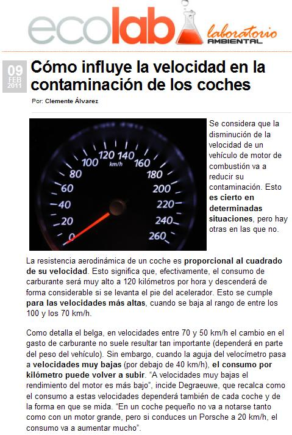

3. Función
Una relación funcional se puede expresar mediante una gráfica o con una tabla. También es posible hacerlo con un enunciado. Mira el siguiente artículo publicado en el blog del diario El País, ecolab, dedicado a cuestiones medioambientales.

De todo el texto anterior, nos quedamos con los siguientes párrafos:
"La resistencia aerodinámica de un coche es proporcional al cuadrado de su velocidad. Esto significa que, efectivamente, el consumo de un carburante será muy alto a 120 kilómetros por hora y descenderá de forma considerable si se levanta el pie del acelerador".
"(...) cuando la aguja del velocímetro pasa a velocidades muy bajas (por debajo de 40 km/h), el consumo por kilómetro puede volver a subir".
¿Qué dos variables se relacionan en ese artículo?, ¿es una relación funcional, es decir, una función?, en ese caso, ¿cuál es la variable independiente y la dependiente?, ¿cómo será su gráfica?, ¿qué quiere decir eso de que la resistencia es proporcional al cuadrado de la velocidad? ¿Habrá una fórmula para expresar una función?
A todas estas preguntas daremos respuesta en el siguiente apartado. No sin antes hacer un breve recorrido por la historia y ver cómo se forjó el concepto de función.